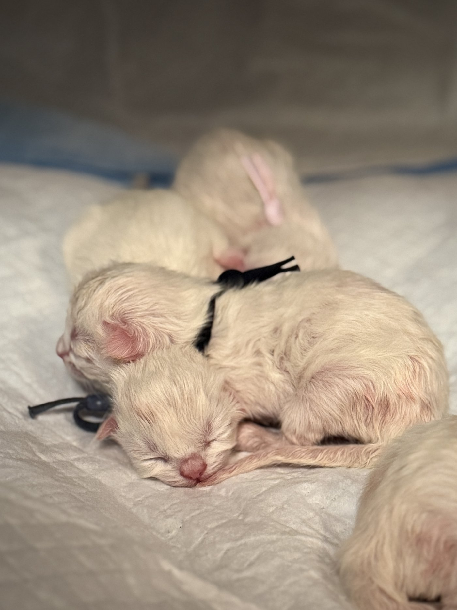

Proč se ragdollí koťátka rodí bílá?
Tajemství point zbarvení, díky kterému se z bílého koťátka postupně stává ragdoll s výraznými pointy.
Jedním z nejvýraznějších znaků ragdolla je jeho typické point zbarvení. Tmavší uši, maska, tlapky a ocas kontrastují se světlejším tělem a společně vytvářejí vzhled, který je pro toto plemeno tak charakteristický.
Věděli jste ale, že ragdollí koťátka se rodí téměř úplně bílá?
A právě proto není možné hned po narození s jistotou říct, jak přesně bude koťátko vypadat.

Proč jsou po narození bílá?
Za point zbarvením stojí specifická genetická vlastnost, která ovlivňuje tvorbu pigmentu v srsti. Enzym potřebný pro tvorbu tmavého pigmentu je citlivý na teplotu.
V teplejších částech těla, kde je teplota vyšší, se pigment tvoří jen omezeně. Naopak chladnější části těla, jako jsou uši, obličej, tlapky a ocas, umožňují jeho tvorbu výrazněji.
Proto se barva postupně začíná objevovat právě na těchto chladnějších místech.
Koťátko je po narození ještě velmi malé a jeho tělesná teplota je v děloze stabilně vysoká. Pigment se proto během vývoje srsti prakticky neprojevuje. Po narození se začnou ochlazovat především koncové části těla a pointy se postupně zvýrazňují.
Jak se z bílého koťátka stane ragdoll s výraznými pointy?
Zbarvení se začíná postupně vyvíjet během prvních dnů a týdnů života. Nejprve mohou být vidět jen velmi jemné náznaky na ouškách nebo nose, později se začnou jednotlivé partie výrazněji vybarvovat.
Jak koťátko roste, jeho zbarvení se dále mění a pointy se postupně prohlubují. Ragdoll tak může v průběhu svého života získávat stále výraznější kontrast mezi tělem a koncovými částmi.
Proto může malé koťátko vypadat úplně jinak než dospělá kočka.
A co kresba Lynx?
Tady přichází další zajímavost.
U ragdollů se můžeme setkat také s kresbou Lynx, tedy s tabby kresbou v pointech. Ta vytváří například výrazné proužky na obličeji, nohou nebo ocase.
Ani tuto kresbu ale u čerstvě narozeného koťátka nemusíme vždy okamžitě dobře rozeznat.
U některých koťátek se začne projevovat velmi nenápadně a s postupným vybarvováním je stále zřetelnější. Proto se může stát, že u úplně malého bílého koťátka ještě není na první pohled jasné, jak výrazné pointy nebo kresbu bude mít.
Co tedy můžeme vědět hned po narození?
Zkušení chovatelé dokážou díky znalosti rodičů a jejich genetiky předpokládat, jaké zbarvení mohou koťátka mít. Samotný vzhled novorozeného koťátka ale ještě neukáže celý jeho budoucí vzhled.
Právě postupné vybarvování je jednou z krásných věcí na ragdollech. Z malého bílého koťátka se během několika týdnů začne stávat kočka s charakteristickou maskou, tmavšími oušky, tlapkami a ocasem.
A pokud se přidá kresba Lynx, může být výsledný vzhled ještě výraznější a zajímavější.
Point zbarvení je součástí kouzla ragdolla
Point zbarvení není jen estetickou zvláštností. Je to fascinující ukázka toho, jak může genetika a teplota ovlivňovat vzhled kočky.
Možná právě proto jsou ragdollí koťátka tak trochu překvapením. Když se narodí, ještě před námi mají schovanou velkou část svého budoucího vzhledu. A s každým dalším týdnem můžeme sledovat, jak se jejich vlastní barva a kresba postupně odhalují.